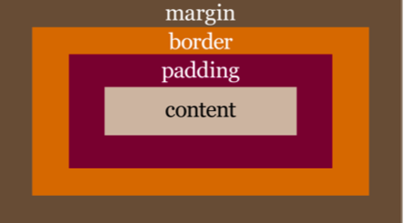

Sig: Práctica: Comma Separated Values. Sup: Expresiones Regulares y Análisis Ant: Mozilla Developer Network: Documentación Con:
Véase https://bitbucket.org/casiano/pl-grado-temperature-converter/src.
[~/srcPLgrado/temperature(master)]$ pwd -P /Users/casiano/local/src/javascript/PLgrado/temperature # 27/01/2014
<html>
<head>
<meta http-equiv="Content-Type" content="text/html; charset=UTF-8">
<title>JavaScript Temperature Converter</title>
<link href=normalize.css" rel="stylesheet" type="text/css">
<link href="global.css" rel="stylesheet" type="text/css">
<script type="text/javascript" src="temperature.js"></script>
</head>
<body>
<h1>Temperature Converter</h1>
<table>
<tr>
<th>Enter Temperature (examples: 32F, 45C, -2.5f):</th>
<td><input id="original" autofocus onchange="calculate();" placeholder="32F" size="50"></td>
</tr>
<tr>
<th>Converted Temperature:</th>
<td><span class="output" id="converted"></span></td>
</tr>
</table>
</body>
</html>
Escribir HTML es farragoso. Una solución es usar algún plugin para su editor favorito.
Emmet existe para diversos editores, entre ellos para
<input> elements are used within a <form> element to declare input controls that allow users to input data.
type attribute.
type attribute specifies the type of <input> element to display.
The default type is text.
Other values are:
<form>
element, but may also appear outside of a <form> element declaration.
The onchange event occurs when the value of an element has been changed.
<link> tag defines a link between a document and an external resource.
rel attribute is required. It specifies the relationship between the current document and the linked document
<link> tag is used to link to external CSS style sheets.
<link href="global.css" rel="stylesheet" type="text/css">
[~/srcPLgrado/temperature(master)]$ cat global.css
th, td { vertical-align: top; text-align: right; font-size:large; } /* Don't center table cells */
#converted { color: red; font-weight: bold; font-size:large; } /* Calculated values in bold */
input {
text-align: right; /* Align input to the right */
border: none;
border-radius: 20px 20px 20px 20px;
padding: 5px 5px;
font-size:large; }
body
{
background-color:#b0c4de; /* blue */
font-size:large;
font-family: "Lucida Sans Typewriter", "Lucida Console", Monaco, "Bitstream Vera Sans Mono", monospace;
}
h1 {
font-weight: normal;
font-family: "Brush Script MT", cursive;
background: #3C5681;
padding: 5px 15px;
color: white;
display:inline-block;
border-radius: 10px 10px 10px 10px;
}
th, td { vertical-align: top; text-align: right; font-size:large; } /* Don't center table cells */
What you see above is referred to as a rule set.
Here we're using commas to separate our selectors th and td.
This is a useful method to use to combine multiple selectors in a single rule set.
In this case, the styles will apply to all <th> and <td> elements,
nav would match all HTML <nav> elements, and a selector of ul would match all HTML unordered lists, or <ul> elements.
#)
preceding a string of characters.
The string of characters is defined by the developer.
This selector matches any HTML element that has an
ID attribute with the same value as that of the selector, but minus the hash symbol.
The rule:
#converted { color: red; font-weight: bold; font-size:large; } /* Calculated values in bold */
applies to:
<span class="output" id="converted">
#container .box {
float: left;
padding-bottom: 15px;
}
¿A que elementos de este HTML se aplica?
<div id="container"> <div class="box"></div> <div class="box-2"></div> </div> <div class="box"></div>
#container > .box {
float: left;
padding-bottom: 15px;
}
¿A que elementos de este HTML se aplica?
<div id="container">
<div class="box"></div>
<div>
<div class="box"></div>
</div>
</div>
h2 ~ p { margin-bottom: 20px; }
¿A que elementos de este HTML se aplica?
<h2>Title</h2> <p>Paragraph example 1.</p> <p>Paragraph example 2.</p> <p>Paragraph example 3.</p> <div class="box"> <p>Paragraph example 4.</p> </div>
p+ p {
text-indent: 1.5em; margin-bottom: 0;
}
¿A que elementos de este HTML se aplica?
<h2>Title</h2> <p>Paragraph example 1.</p> <p>Paragraph example 2.</p> <p>Paragraph example 3.</p> <div class="box"> <p>Paragraph example 4.</p> <p>Paragraph example 5.</p> </div>
input[type="text"] {
background-color: #444;
width: 200px;
}
¿A que elementos de este HTML se aplica?
<input type="text"> <input type="submit">
a:hover {
color: red;
}
¿Que porción del selector es conocido como pseudo-clase?
¿Cuando se aplica la regla a un ancla <a>?
#form [type=text] { border: solid 1px #ccc; }
p { font-size: 20px; }
p { font-size: 30px; }
¿Cual será el tamaño de font que se aplique a los elementos párrafo?
div p { color: blue; }
p{ color: red; }
¿Cual será el color que se aplique a los elementos párrafo?
#main {
color: green;
}
body div.container {
color: pink;
}
¿Cual será el color que se aplique a este elemento <div>?
<div id="main" class="container"></div>
For example, if you use an un-ordered list (the <ul> element) the browser will display the list with some existing
formatting styles, including bullets next to the individual list items (the <li> elements inside the <ul>).
By using a CSS reset document at the top of your CSS file, you can reset all these styles to a bare minimum.
Two of the most popular CSS resets are Eric Meyer's Reset and Nicolas Gallagher's Normalize.css
<title>JavaScript Temperature Converter</title>
<link href=normalize.css" rel="stylesheet" type="text/css">
<link href="global.css" rel="stylesheet" type="text/css">
The box model refers to the usually invisible rectangular area that is created for each HTML element. This area has four basic components

The content portion of the box model holds the actual content.
The content can be text, images, or whatever else is visible on a web page.
The padding of an element is defined using the padding property. The padding is the space around the content.
It can be defined for an individual side
(for example, padding-left: 20px) or
for all four sides in one declaration
padding: 20px 10px 30px 20px, for instance.
When declaring all four sides, you’re using a shorthand property.
Often when a CSS property takes multiple values like this,
they start at the top and go clockwise in relation to the element.
So, in the example just cited, this would apply 20px of padding to the
top, 10px to the right, 30px to the bottom, and 20px to the left.
The border of an element is defined using the border property.
This is a
shorthand property that defines the element's border-width, border-style, and border-color. For example,
border: 4px dashed orange.
Margins are similar to padding, and are defined using similar syntax
margin-left: 15pxor
margin: 10px 20px 10px 20pxThe margin portion of an element exists outside the element.
A margin creates space between the targeted element and surrounding elements.
.example {
border-style: dashed;
border-width: 2px;
border-color: blue;
}
.example {
border: solid;
color: green;
}
¿De que color queda el borde de los elementos de clase example?
¿Que border-style tendrán?
¿Que border-width tendrán?
See gist
.example {
margin: 10px 20px;
}
¿De que tamaño quedarán margin-top margin-right, margin-bottom y margin-left para los elementos de clase example?
While you can not "debug" CSS, because it is not a scripting language, you can utilize the Chrome DevTools Elements panel to inspect an element and view the Styles pane on the right.
This will give you insights as to the styles being overridden or ignored (line threw).
The Styles pane is also useful because of it's ability to LiveEdit the document being inspected, which may help you iron out the issues.
If the styles are being overridden, you can then view the Computed Style pane to see the CSS that is actually being utilized to style your document.
HTML elements fall under two categories: block or inline.
<div>, <p>, h1, li
and <section>.
A block-level element is more of a structural, layout related element.
A block element is an element that takes up the full width available, and has a line break before and after it.
Inline elements include <span>, <b>, and <em>.
It's worth noting that inline elements are subject to CSS properties that affect text. For example, line-height and letter-spacing are CSS properties that can be used to style inline elements.
However, those same properties wouldn't affect block elements.
The font-family property can hold several font names as a "fallback" system. If the browser does not support the first font, it tries the next font.
"use strict"; // Use ECMAScript 5 strict mode in browsers that support it function calculate() { var result; var original = document.getElementById("........"); var temp = original.value; var regexp = /.............................../; var m = temp.match(......); if (m) { var num = ....; var type = ....; num = parseFloat(num); if (type == 'c' || type == 'C') { result = (num * 9/5)+32; result = .............................. } else { result = (num - 32)*5/9; result = ............................ } converted.innerHTML = result; } else { converted.innerHTML = "ERROR! Try something like '-4.2C' instead"; } }
The command:
npm init [-f|--force|-y|--yes]
Will ask you a bunch of questions, and then write a package.json for you.
If you already have a package.json file, it'll read that first, and default to the options in there.
It is strictly additive, so it does not delete options from your package.json without a really good reason to do so.
If you invoke it with -f, --force, it will use only defaults and not prompt you for any options.
[/tmp/pl-grado-temperature-converter(karma)]$ npm init
This utility will walk you through creating a package.json file.
It only covers the most common items, and tries to guess sane defaults.
See `npm help json` for definitive documentation on these fields
and exactly what they do.
Use `npm install <pkg> --save` afterwards to install a package and
save it as a dependency in the package.json file.
Press ^C at any time to quit.
name: (pl-grado-temperature-converter)
version: (0.0.0) 0.0.1
description: ULL ESIT Grado de Informática. 3º. PL. Lab "Temperature Converter"
entry point: (temperature.js)
test command: open tests/index.html
git repository: (ssh://git@bitbucket.org/casiano/pl-grado-temperature-converter.git)
keywords: regexp
author: Casiano
license: (ISC)
About to write to /private/tmp/pl-grado-temperature-converter/package.json:
{
"name": "pl-grado-temperature-converter",
"version": "0.0.1",
"description": "ULL ESIT Grado de Informática. 3º. PL. Lab \"Temperature Converter\"",
"main": "temperature.js",
"directories": {
"test": "tests"
},
"scripts": {
"test": "open tests/index.html"
},
"repository": {
"type": "git",
"url": "ssh://git@bitbucket.org/casiano/pl-grado-temperature-converter.git"
},
"keywords": [
"regexp"
],
"author": "Casiano",
"license": "ISC"
}
Is this ok? (yes) y
Esto genera el fichero package.json:
[/tmp/pl-grado-temperature-converter(karma)]$ ls -ltr | tail -1 -rw-r--r-- 1 casiano wheel 487 5 feb 18:22 package.jsonSi ahora escribo:
[/tmp/pl-grado-temperature-converter(karma)]$ npm test > pl-grado-temperature-converter@0.0.1 test /private/tmp/pl-grado-temperature-converter > open tests/index.htmlEjecutamos las pruebas en el navegador (en Mac OS X) supuesto que ya estuvieran escritas.
Mocha is the simple, flexible, and fun JavaScript unit-testing framework that runs in Node.js or in the browser.
It is open source (MIT licensed), and we can learn more about it at https://github.com/mochajs/mocha
Let's say Mocha setups and describes test suites and Chai provides convenient helpers to perform all kinds of assertions against your JavaScript code.
Podemos instalar mocha globalmente:
$ npm install -g mochapero podemos también añadirlo en
package.json como una devDependencies:
[/tmp/pl-grado-temperature-converter(karma)]$ head -n 5 package.json
{
"dependencies": {},
"devDependencies": {
"mocha": "latest"
},
Y ahora podemos instalar todas las dependencias usando npm install:
$ npm install npm http GET https://registry.npmjs.org/mocha npm http 200 https://registry.npmjs.org/mocha npm http GET https://registry.npmjs.org/commander/2.3.0 ...
En este caso mocha es instalado localmente, no globalmente:
[/tmp/pl-grado-temperature-converter(karma)]$ ls -ltr node_modules/ total 0 drwxr-xr-x 12 casiano staff 408 5 feb 18:40 mocha
Una vez instalado Mocha, Creamos la estructura para las pruebas:
$ mocha init testsesto en el caso de que lo hayamos instalado globalmente o bien
$ node_modules/mocha/bin/mocha init testssi lo hemos instalado localmente.
$ tree tests tests |-- index.html |-- mocha.css |-- mocha.js `-- tests.js
Añadimos chai.js
(Véase
http://chaijs.com/guide/installation/) al directorio tests.
Chai is a platform-agnostic BDD/TDD assertion library featuring several interfaces (for example, should, expect, and assert). It is open source (MIT licensed), and we can learn more about it at http://chaijs. com/
We can also install Chai on the command line using npm, as follows:
npm install chai --save-dev
The latest tagged version will be available for hot-linking at http://chaijs.com/chai.js.
If you prefer to host yourself, use the chai.js file from the root of the
github project.
[/tmp/pl-grado-temperature-converter(karma)]$ curl https://raw.githubusercontent.com/chaijs/chai/master/chai.js -o tests/chai.js
% Total % Received % Xferd Average Speed Time Time Time Current
Dload Upload Total Spent Left Speed
100 118k 100 118k 0 0 65521 0 0:00:01 0:00:01 --:--:-- 65500
Ya tenemos nuestro fichero tests/chai.js:
[/tmp/pl-grado-temperature-converter(karma)]$ head tests/chai.js
;(function(){
/**
* Require the module at `name`.
*
* @param {String} name
* @return {Object} exports
* @api public
*/
Quedando el árbol como sigue:
[~/srcPLgrado/temperature(master)]$ tree tests/ tests/ |-- chai.js |-- index.html |-- mocha.css |-- mocha.js `-- tests.js 0 directories, 5 files
Modificamos el fichero tests/index.html que fué generado por mocha init
para
chai.js
temperature.js
mocha.setup('tdd'):
index.html con los correspondientes input y
span:
<input id="original" placeholder="32F" size="50">
<span class="output" id="converted"></span>
[~/srcPLgrado/temperature(master)]$ cat tests/index.html
<!DOCTYPE html>
<html>
<head>
<title>Mocha</title>
<meta http-equiv="Content-Type" content="text/html; charset=UTF-8">
<meta name="viewport" content="width=device-width, initial-scale=1.0">
<link rel="stylesheet" href="mocha.css" />
</head>
<body>
<div id="mocha"></div>
<input id="original" placeholder="32F" size="50">
<span class="output" id="converted"></span>
<script src="chai.js"></script>
<script src="mocha.js"></script>
<script src="../temperature.js"></script>
<script>mocha.setup('tdd')</script>
<script src="tests.js"></script>
<script>
mocha.run();
</script>
</body>
</html>
The "TDD" interface provides
suite()
test()
setup()
teardown().
[~/srcPLgrado/temperature(master)]$ cat tests/tests.js
var assert = chai.assert;
suite('temperature', function() {
test('32F = 0C', function() {
original.value = "32F";
calculate();
assert.deepEqual(converted.innerHTML, "0.0 Celsius");
});
test('45C = 113.0 Farenheit', function() {
original.value = "45C";
calculate();
assert.deepEqual(converted.innerHTML, "113.0 Farenheit");
});
test('5X = error', function() {
original.value = "5X";
calculate();
assert.match(converted.innerHTML, /ERROR/);
});
});